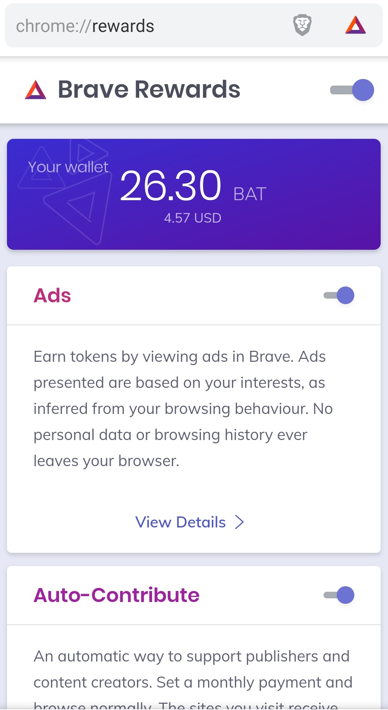

TL;DR
Brave is a privacy focused browser with a revolutionary means of supporting content publisher's revenue streams. Here's why you should give it a try, particularly if you maintain a blog or publish open-source software.
It all starts with Privacy
As anyone who knows me will tell you, I care deeply about privacy. In fact, should you happen to ask one of these people about my insistence on privacy, they'll give a nod confirmation accompanied by a not so subtle eye-roll of derision. This used to bother me but I've learned the hard way the lesson which Cory Doctorow states so eloquently:
It’s really hard to get people to care about dangers that are far in the future, especially when the action that puts you in danger and the consequences of that action are separated by an unbridgeable gap of time and space. Privacy disclosures are a public health problem, like smoking. No one puff on a cigarette will definitely give you cancer, but take enough puffs and you’ll virtually guarantee cancer, eventually. No one act of disclosure of personal information will harm you, but once enough disclosures have taken place, over enough time, you’re going to get into serious privacy trouble.
I am that schmuck who actual reads (and, more often than not, is terrified by) the list of permissions installing an app on your phone requires. Therefore, when my beloved Windows Mobile phone was finally - and somewhat forcibly - supplanted by an Android device, my first action was to endeavour to replace all the privacy invading dross that came pre-installed and find more secure alternatives.
And so it was that I chose Brave to replace the stock Chrome browser.
The Brave Browser
Brave is a Chromium based browser focused on user privacy. It's privacy features include the ability to block ads, cross site trackers, cross site cookies and device identification; all features used by nefarious advertising agencies to aggressively profile and target individuals without consent. Moreover, on a mobile device, using Brave saves time, money and battery as adverts and trackers are not downloaded resulting in sites that load quicker, use less data allowance and consume less power.
It works really well and, to me, is a no brainer. I've yet to find a site that didn't work in Brave or has been otherwise negatively impacted by the removal of adverts/trackers. I would unreservedly recommend that everyone swap Google Chrome for Brave immediately; you won't look back.
It's a win-win, but not a win-win-win.
Of course, there's an issue with blocking adverts: Many content publishers rely on the use of advertising to pay the bills and, by preventing adverts from appearing, you're depriving the sites you visit most of a vital source of revenue.
Brave's founders were very aware of the web's dependence on the trichotomy of users, content publishers and advertisers when they released their browser. In the years since, they have released and refined various approaches to resolving this issue, finally arriving at the BAT.
Basic Attention Token (BAT)
The Basic Attention Token endeavours to address this issue by providing a means for advertisers to reach users through content publisher's sites while doing so anonymously and providing financial incentives to all the involved parties.
As the old adage goes, a picture is worth a thousand words so here's one worth many times that, direct from the basicattentiontoken.org website:

In short, users are able to support the sites they visit most by being exposed to advertisements that are truly relevant to them, all without compromising privacy. Amazingly the user is even rewarded for being exposed to these ads and will accumulate BAT (directly tradable against other crypto - and by extension - fiat currencies) in the browser's built-in wallet.
Brave Rewards
This really is a revolution in how the modern web operates and is monetized yet, amazingly, it is entirely optional in the Brave Browser.
It is enabled by opting in to 'Brave Rewards' as shown below:
I enabled "Brave Rewards" a couple of months back after being prompted by Brave and reading about it in depth. As you can see, just by using the browser as I normal would, without any obvious, annoying or intrusive ads, and despite having 'Auto-Contribute' enabled, I have accumulated ~26 BAT.
"But that's less than five dollars!" I hear you say. True, but that's five dollars that would otherwise have been in the pockets of the big internet advertising agencies and, as with other crypto currencies, has the possibility to be worth much more should the BAT continue it's current growth. More importantly though, by auto-contributing accrued BAT to the sites I visit most, I have directly supported these sites with (micro) payments in a way I ordinarily would not have been able to do.
Now [get] pay [for] attention!
All in all, I feel pretty good about my adoption and promotion of BAT. So much so that I recently registered as a 'Verified Content Creator' and added both my blog and my github account as revenue channels. By registering in this way, anyone who uses the Brave browser to read my blog or open-source projects will automatically help support the further creation of these forms of content by contributing BAT.
The Brave Rewards Creators program allows you to accrue BAT through numerous channels including (at the time of writing) web sites, YouTube, Twitch, Twitter, Vimeo, Reddit and Github. If you create content in any of these ways, I very much recommend you register as a verified content creator. Brave maintains historical contributions to creators not currently registered, so you could be in for a windfall of BAT when you do!
BAT-sh*t crazy!
More recently I've moved to using Brave as my primary desktop browser too. Initial experiences are that it provides the same excellent browsing characteristics of it's Android cousin but that it's use of system notifications for ad delivery is a little too "in your face". I'm going to stick with it for a while and see how it goes. If the ads get too much, I'll simply disable "Brave Rewards" on the desktop while continuing to enjoy privacy and speed enhancements delivered by this excellent browser.
Support me
If you have had your interest piqued by this post and are now interested in trying out the Brave browser, it would be great if you could use this referral link for download. It will net me approximately $5 of BAT via the Brave referral program. Thanks!